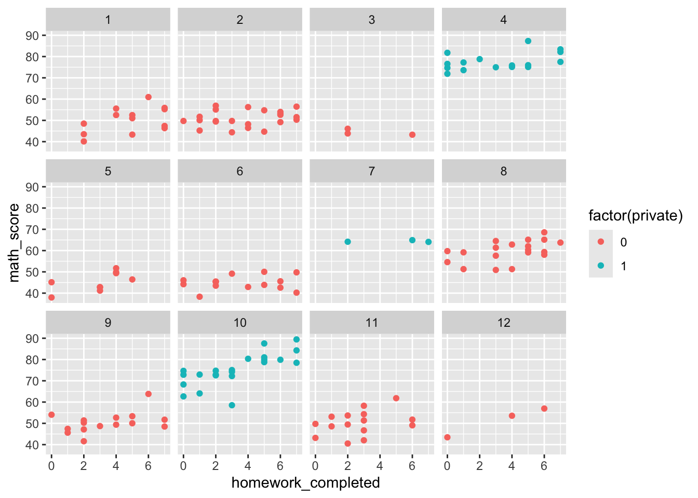
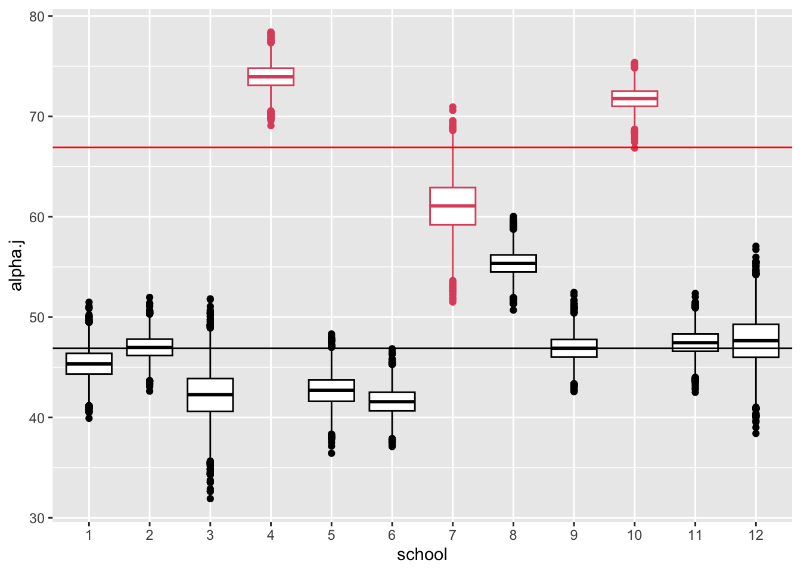
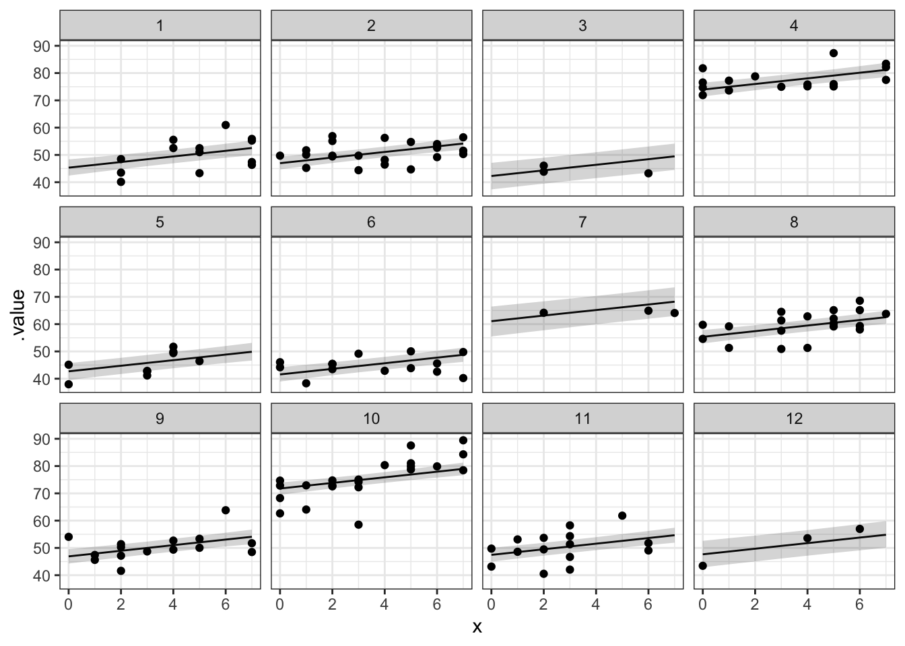
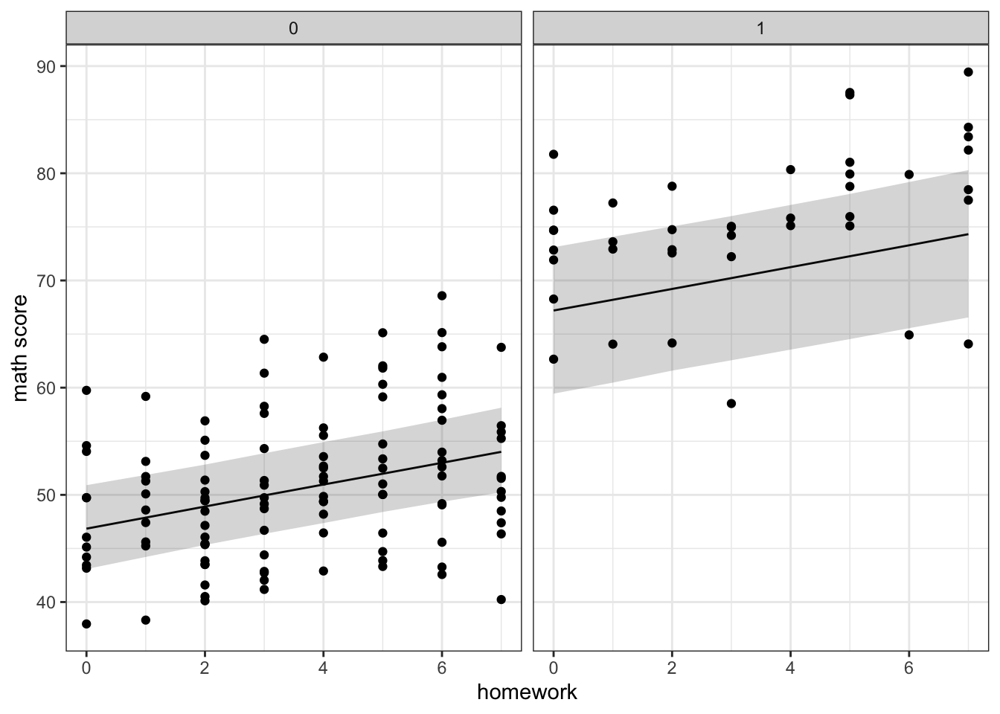
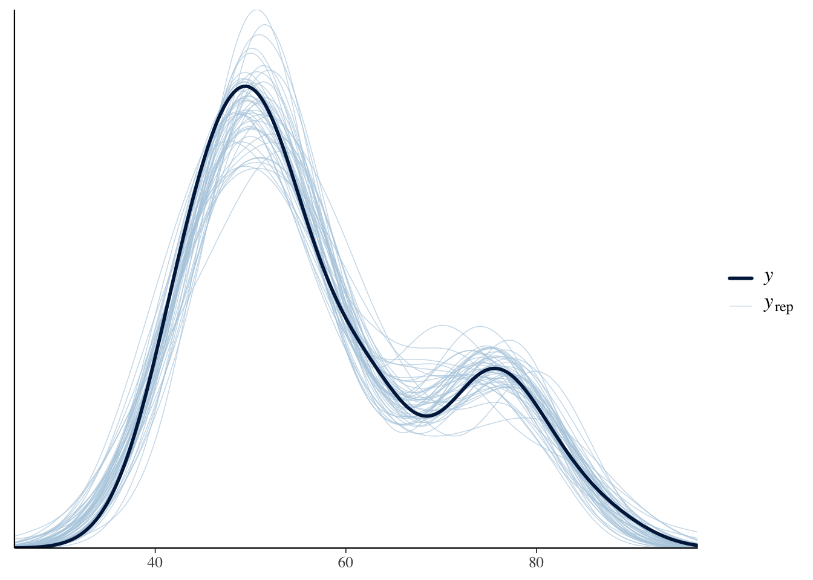
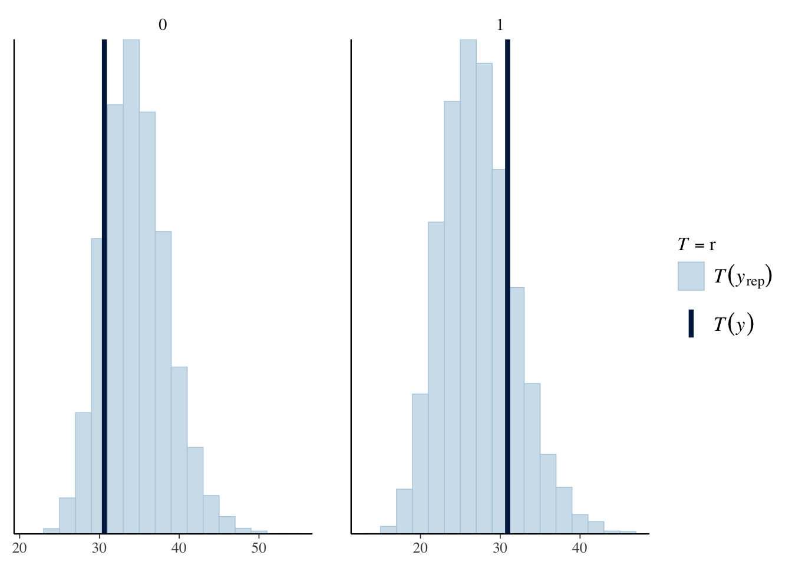
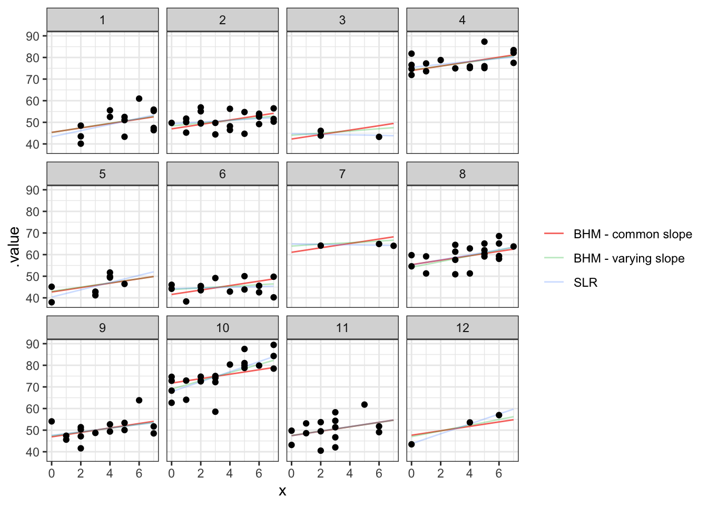
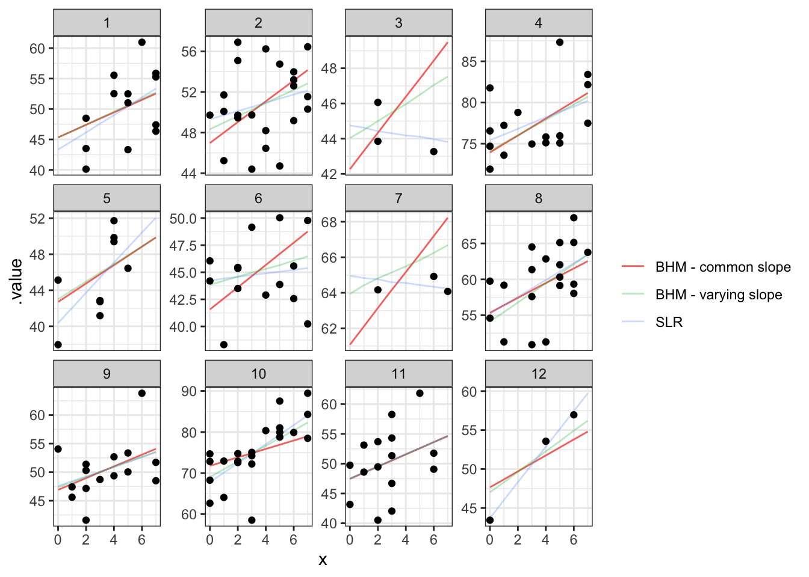
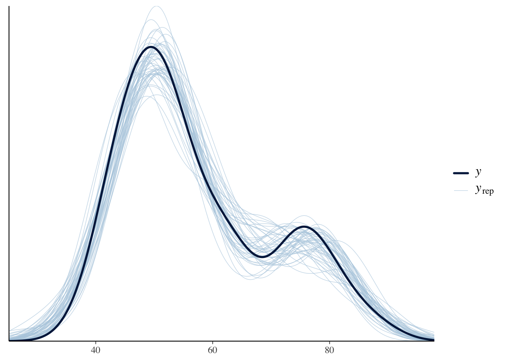
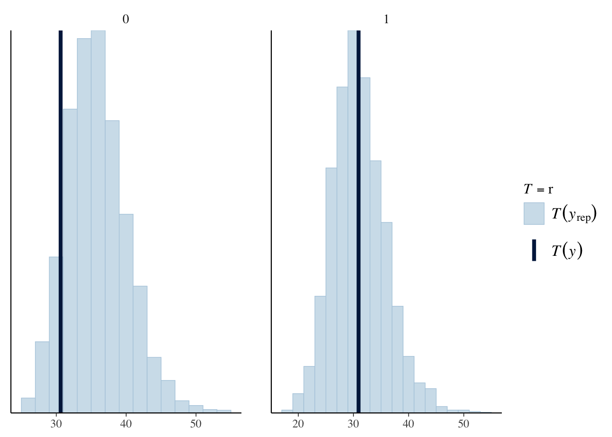

Bayesian Data Analysis
Bayesian Hierarchical Regression Models
Hierarchical Linear Models
Why Use Hierarchical Regression Models?
Hierarchical regression models are useful when predictors vary across different levels of a dataset. They help account for nested or clustered data structures, providing more accurate insights into relationships at each level.
Examples
- Educational Research
Studying scholastic achievement involves information at multiple levels:- Individual-level: Student characteristics, such as family background
- Class-level: Teacher characteristics and teaching style
- School-level: Policies, neighborhood context
- Individual-level: Student characteristics, such as family background
- Clustered or Stratified Sampling
When data are collected through stratified or cluster sampling, hierarchical models allow for regression analyses that respect these data groupings, providing insights within and across clusters.
Hierarchical Linear Models
Adding Predictors at Multiple Levels
Predictors can be introduced for each level in hierarchical data. For example:
Educational Context: Predictors for individual students, classrooms, and schools
Sampling Context: Predictors for strata or clusters
Challenges in Multi-Level (Hierarchical) Modeling
Increasing Parameters: Introducing predictors at multiple levels increases the number of parameters, often dramatically.
Estimation Approach: Estimating these parameters accurately requires additional modeling, typically through a population distribution.
Handling Multiple Levels and Bayesian Estimation
Hierarchical models can handle multiple levels of variation without a set limit.
Bayesian methods offer robust approaches for estimating unknown parameters across levels.
Example: Math Scores Data
Suppose that we have some data on the math scores for students in 12 different schools.
Each school contributes a number of data points.
We also have predictors on number of completed homeworks and type of school (public, private).
School-specific regression lines can describe the relationship between math scores and homework completed at the school level.
If there is a lack of data for some schools then parameter estimates can be informed by all other schools.
We can consider the school type as a predictor for the school level parameters.
We can get an overall estimate of the relationship between math scores and no. of homeworks completed.
Visualising the Data
Hierarcical Regression on Individuals within Groups (Schools)
Goal: Model math scores with a linear regression and share information across schools to provide information where data are sparse. Include relevant predictors at the different levels in the hierarchy.
Modelling Option
\(y_{i} \sim N(\mu_i,\sigma^2)\)
\(\mu_i = \alpha_{j[i]} + \beta x_i\) for \(i = 1 \ldots n\)
where \(x_i\) is the number of homeworks completed.
Priors
\(\alpha_j \sim N(\mu_{\alpha},\sigma^2_{\alpha})\) for \(j = 1 \ldots m\)
\(\mu_{\alpha} \sim Uniform(0,100)\)
\(\sigma_{\alpha} \sim \text{half-t}(0,2^2,1)\)
\(\beta \sim Normal(0,10^2)\)
\(\sigma \sim Uniform(0,30)\)
Including Predictors at the Group Level
Additionally, type of school is potentially informative for across-school variation in average math scores and in this case we can further extend the model such that
\(\alpha_j \sim N(\mu_{\alpha_j},\sigma^2_{\alpha})\) for \(j = 1 \ldots m\)
\(\mu_{\alpha_j} = \gamma_0 + \gamma_1u_j\)
where \(u_j\) is the school type (public or private).
\(\gamma_0 \sim Uniform(0,100)\)
\(\gamma_1 \sim Normal(0,10^2)\)
\(\sigma_{\alpha} \sim dt(0,2^2,1)\)
The model DAG

The JAGS model
bhregmodel = "
model{
for(i in 1:N)
{
y.i[i] ~ dnorm(mu.i[i],sigma^-2) # data model
mu.i[i] <- alpha.j[school[i]] + beta*x.i[i]
} # end i loop
for(j in 1:n_school)
{
alpha.j[j] ~ dnorm(mu_alpha.j[j],sigma_alpha^-2)
mu_alpha.j[j] <- gamma0 + gamma1*u.j[j]
}
beta ~ dnorm(0,10^-2)
gamma0 ~ dunif(0,100)
gamma1 ~ dnorm(0,10^-2)
sigma ~ dunif(0,30)
sigma_alpha ~ dt(0,2^-2,1)T(0,)
"Results: parameter estimates
par_summary <- m %>%
gather_rvars(alpha.j[1:12],beta,mu_alpha.j[1:12],sigma,sigma_alpha) %>%
median_qi(.value)
par_summary %>% print(n = 27)# A tibble: 27 × 8
`1:12` .variable .value .lower .upper .width .point .interval
<int> <chr> <dbl> <dbl> <dbl> <dbl> <chr> <chr>
1 1 alpha.j 45.3 42.4 48.4 0.95 median qi
2 2 alpha.j 47.0 44.7 49.4 0.95 median qi
3 3 alpha.j 42.3 37.4 47.1 0.95 median qi
4 4 alpha.j 73.9 71.4 76.5 0.95 median qi
5 5 alpha.j 42.7 39.5 45.7 0.95 median qi
6 6 alpha.j 41.6 39.0 44.2 0.95 median qi
7 7 alpha.j 61.1 55.5 66.4 0.95 median qi
8 8 alpha.j 55.3 52.9 57.8 0.95 median qi
9 9 alpha.j 46.9 44.3 49.5 0.95 median qi
10 10 alpha.j 71.8 69.5 74.0 0.95 median qi
11 11 alpha.j 47.5 45.0 50.0 0.95 median qi
12 12 alpha.j 47.7 42.9 52.6 0.95 median qi
13 NA beta 1.03 0.679 1.37 0.95 median qi
14 1 mu_alpha.j 46.8 43.1 50.9 0.95 median qi
15 2 mu_alpha.j 46.8 43.1 50.9 0.95 median qi
16 3 mu_alpha.j 46.8 43.1 50.9 0.95 median qi
17 4 mu_alpha.j 67.2 59.4 73.1 0.95 median qi
18 5 mu_alpha.j 46.8 43.1 50.9 0.95 median qi
19 6 mu_alpha.j 46.8 43.1 50.9 0.95 median qi
20 7 mu_alpha.j 67.2 59.4 73.1 0.95 median qi
21 8 mu_alpha.j 46.8 43.1 50.9 0.95 median qi
22 9 mu_alpha.j 46.8 43.1 50.9 0.95 median qi
23 10 mu_alpha.j 67.2 59.4 73.1 0.95 median qi
24 11 mu_alpha.j 46.8 43.1 50.9 0.95 median qi
25 12 mu_alpha.j 46.8 43.1 50.9 0.95 median qi
26 NA sigma 4.69 4.19 5.28 0.95 median qi
27 NA sigma_alpha 5.09 3.20 8.93 0.95 median qi Results: school specific intercepts
Recall: \(\alpha_j \sim N(\gamma_0 + \gamma_1u_j, \sigma_{\alpha}^2)\)

Results: Regression lines + 95% Credible Intervals

Results: Overall regression lines for each school type

Posterior predicitive checks (density overlay)

Posterior predicitive checks (test statistic)
Test statistic = max(y) - min(y)

Further extend the model to include varying slopes
\(y_{i} \sim N(\mu_i,\sigma^2)\)
\(\mu_i = \alpha_{j[i]} + \beta_{j[i]} x_i\) for \(i = 1 \ldots n\)
\(\beta \sim Normal(\mu_{\beta}, \sigma_{\beta})\)

Results: Compare Regression lines

Zoom in

Posterior predicitive checks (density overlay)

Posterior predicitive checks (test statistic)
Test statistic = max(y) - min(y)

Class Example
We have data containing a sub-sample of outcomes for the annual Cherry Blossom Ten Mile race in Washington, D.C.
library(bayesrules)
data("cherry_blossom_sample")
running_dat <- cherry_blossom_sample
running_dat# A tibble: 252 × 6
runner age net gun year previous
<fct> <int> <dbl> <dbl> <int> <int>
1 1 53 84.0 87.0 2002 0
2 1 54 74.3 74.6 2003 1
3 1 55 75.2 75.3 2004 2
4 1 56 74.2 74.4 2005 3
5 1 57 74.2 74.3 2006 4
6 1 58 NA 74.8 2007 5
7 1 59 NA 79.5 2008 6
8 2 52 82.7 85.6 2001 0
9 2 53 80.0 80.7 2002 1
10 2 54 88.1 94.8 2003 2
# ℹ 242 more rowsFit a Bayesian hierarchical regression model to these data.